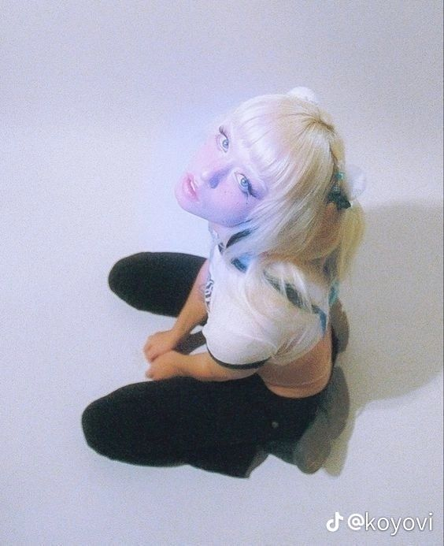

Upview
Objectif
Tester le dessin en perspective avec une pose que je ne dessine pas souvent.
Inspirations
Je me suis inspirée d'images sur pinterest car je trouve que les poses et angles utilisés sont très intéressants.

Processus